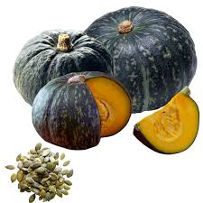
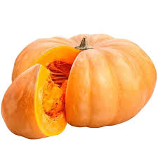
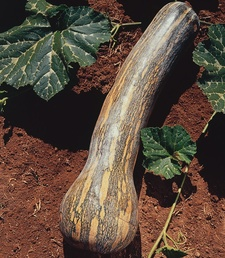
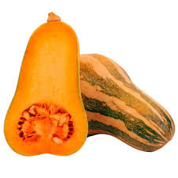
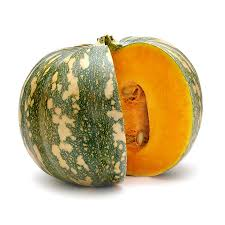
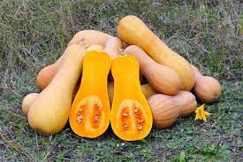
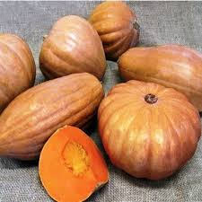
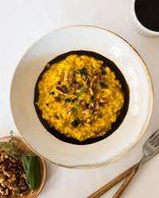
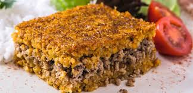

A história da abóbora começa há cerca de dez mil anos nas terras que hoje compreendem
o México e o sul dos Estados Unidos, tornando-a um dos cultivos mais antigos do planeta.
Muito antes de se tornar um alimento global, ela era a base da sobrevivência de povos
como os astecas, maias e incas, que valorizavam não apenas a sua polpa, mas principalmente
as sementes ricas em proteína e a casca resistente, que era seca para servir como utensílio doméstico.
Nessas culturas, a abóbora fazia parte de um sistema agrícola inteligente chamado de "Três Irmãs", onde era
plantada junto ao milho e ao feijão para que as plantas se ajudassem mutuamente no crescimento e na proteção do solo.
Plantio e sua época:
Para ter sucesso no cultivo da abóbora, é fundamental respeitar o clima, pois ela é uma planta de origem tropical
que exige calor e muita luz solar.
Abaixo, detalho as melhores práticas e períodos para o plantio no Brasil.A melhor época para plantar abóbora no Brasil
é geralmente entre os meses de setembro e dezembro, coincidindo
com o início da primavera e o período das chuvas na maior parte do país.
A maioria das abóboras leva entre 90 e 120 dias para ser colhida. O ponto ideal de colheita
é quando o talo começa a secar e a casca fica dura e com cor intensa.
Sua floração:
A floração da abóbora é um processo fascinante e essencial
para a produção dos frutos, pois a planta é monóica, o que significa que ela produz
flores masculinas e femininas separadas no mesmo pé.
Flor Masculina: Possui um cabinho (pedúnculo) longo e fino. No interior, apresenta apenas o estame, que produz
o pólen. Geralmente, elas surgem primeiro na planta para atrair os polinizadores.
Flor Feminina: É a que "carrega" o fruto. Na base da flor, existe uma pequena esfera ou protuberância que se
parece com uma mini abóbora (o ovário).
Se for polinizada, essa parte crescerá até virar o fruto; caso contrário, ela murcha e cai.
Especies de abobora:
Cabotiá (Japonesa): É um híbrido de moranga com abóbora japonesa. Possui casca verde-escura,
casca dura e polpa muito amarela e seca, excelente para nhoques, purês e assados, pois não solta muita água.

Moranga: Arredondada e com gomos definidos, pode ser laranja, avermelhada ou verde. Muito usada em sopas, cremes e no famoso prato "camarão na moranga".

Abóbora de Pescoço (ou Seca): Alongada, grande e com a casca clara/laranja, é muito carnuda e úmida, ideal para doces e compotas.

>
Abóbora Paulista: Alongada, com casca lisa e fina de cor verde-clara, de fácil manejo. Boa para refogados, saladas e preparos rápidos.

Jacarezinho: Pequena a média, com casca verde-escura e gomos marcados, casca rugosa.

Butternut (Manteiga): Formato de pêra, casca lisa bege e sabor suave, muito popular por ser cremosa.

Sergipana (Jerimum de leite): Comum na região nordeste, é levemente adocicada e ótima para preparos regionais.

Composição nutricional:
cabotia (100 g)
Tabela nutricional
% VD (*)
Calorias (valor energético)
39 kcal / 4994 kj
2%
Carboidratos
8,4 g
3%
Proteínas
1,7 g
3%
Gorduras totais
0,54 g
1%
Gorduras saturadas
0,12 g
1%
Fibra alimentar
2,2 g
9%
Sódio
0 mg
0%
Vitamina C
5,1 mg
11%
Benefícios de consumo:
A abóbora é um superalimento de baixa caloria, rico em fibras, vitaminas A, C e E, e potássio, que fortalece o sistema imunológico, melhora a saúde cardiovascular
e auxilia na digestão. Seu alto teor de betacaroteno protege a visão e a pele, enquanto suas sementes oferecem proteínas, magnésio e zinco.
E os principais beneficios da abobora são:
Fortalece a Imunidade: Possui alto teor de betacaroteno, que o organismo converte em vitamina A, auxiliando na prevenção da cegueira noturna e na manutenção da saúde ocular.
Melhora a Visão e Pele: O betacaroteno contribui para a pigmentação da pele, ajudando a manter o bronzeado e oferecendo certa proteção contra danos causados pelos raios solares.
Saúde Cardiovascular: Rica em fibras como pectina e celulose, auxilia no funcionamento intestinal e no combate à prisão de ventre.
Digestão e Emagrecimento: Contém vitamina C e antioxidantes que ajudam a combater radicais livres e a fortalecer as defesas do organismo.
Versatilidade e Nutrição: Pode contribuir para a redução do colesterol LDL e ajudar na regulação dos níveis de açúcar no sangue.
Receitas de Abobora:
Receitas que podem ser feitas com abobora são:
Escondidinho de carne moída com abóbora
INGREDIENTES DO MOLHO:
400 gramas de carne moída
1 colher de sopa de azeite
3 dentes de alho
1 colher de sopa de manteiga ou margarina
1/2 colher de chá de sal (ou a gosto)
1 colher de chá de páprica picante
1/2 colher de chá de açafrão
INGREDIENTES DO PURE DE ABOBORA:
800 gramas de abóbora-cabotiá
300 ml de água
3 dentes de alho
2 colheres de sobremesa de manteiga
1/2 colher de chá de sal
1 colher de sobremesa de requeijão
100 gramas de mussarela
MODO DE PREPARO:
Reúna todos os ingredientes na bancada! Descasque a abóbora e pique de maneira rústica
em pedaços pequenos, para facilitar o cozimento. Descasque e pique também o alho finamente. Preaqueça o forno a 180 ºC;
Para o purê, em uma panela média, coloque os pedaços
de abóbora, os dentes de alho picados e o sal. Adicione também a água, misturando bem e ligando o fogo médio-alto, tampando a panela para cozinhar;
Ao ficar macia e bem cozida (cerca de 10 minutos), retire a panela do fogo e amasse com o auxílio de um garfo, acrescentando a manteiga e mexendo bem para que derreta;
Finalize com o requeijão e misture até obter uma textura bem cremosa. Reserve;
Para o molho, em uma frigideira média, adicione o azeite e a manteiga, aquecendo até que a manteiga derreta e não queime;
Acrescente o alho e antes que comece a dourar, coloque a carne moída e deixe cozinhar, mexendo constantemente para garantir que ela frite uniformemente e solte os sucos;
Tempere com sal, páprica picante e açafrão, mexendo bem para que os temperos se incorporem e tragam cor ao preparo. Continue refogando
até que a carne comece a pegar um pouco no fundo da panela (cerca de 2 minutos);
Para trazer mais umidade, adicione o molho de tomate e misture bem, deixando cozinhar por mais alguns minutos até que fique bem suculento e incorporado;
Em um refratário (20 x 27 cm), faça a primeira camada com metade do purê de abóbora, espalhando bem até cobrir o fundo;
Em seguida, adicione toda a carne moída refogada, espalhando bem para cobrir toda a superfície do purê;
Finalize com uma última camada de purê de abóbora e cubra com a mussarela. Leve ao forno preaquecido para gratinar por 25 minutos. Sirva o escondidinho quentinho!
Risoto vegano de abóbora

INGREDIENTES DO RISOTO:
1/4 de abóbora cabotiá picada
1 fio de azeite
Sal a gosto
1 cebola em tiras finas
1 colher de sopa de manteiga vegana ou azeite
1 xícara de chá de arroz arbório
1/4 xícara de chá de vinho branco seco
1,5 litro de caldo de legumes fervente
Pimenta-do-reino a gosto
INGREDIENTES DO TOPPING:
1 colher de sopa de manteiga vegana ou azeite
2 colheres de sopa de tomilho e sálvia picados
1/4 xícara de nozes picadas
Sal a gosto
Pimenta-do-reino a gosto
MODO DE PREPARO:
Coloque a abóbora em uma forma e tempere-a com azeite e sal
Asse em forno preaquecido a 200 °C até ficar macia, depois amasse com um garfo para formar um purê e reserve.
Em uma panela, refogue a cebola com a manteiga e um pouco de sal até caramelizar.
Misture o arroz, acerte o sal e refogue por uns minutos.
Adicione o vinho, mexa até evaporar e vá adicionando o caldo, uma concha por vez, mexendo sempre.
Quando o caldo estiver no fim e o arroz quase al dente, junte o purê de abóbora e acrescente a pimenta-do-reino.
Coloque o restante do caldo, misture bem, desligue o fogo e reserve.
Em uma frigideira, adicione a manteiga, o tomilho, a sálvia, as nozes, o sal e a pimenta-do-reino e leve ao fogo até tostar levemente.
Sirva o risoto e finalize com o topping de ervas e nozes
Quibe de abóbora

INGREDIENTES DO QUIBE:
3 e 1/2 de xícaras de chá de cabotiá picada (500 gramas)
1 xícara de chá de trigo para quibe (150 gramas)
1 e 1/2 de xícara de chá de água quente (360 ml)
3 dentes de alho grandes
3 colheres de sopa de óleo vegetal (45 ml)
1/2 cebola grande
1/4 de xícara de chá de azeite (60 ml)
1/2 xícara de chá de cheiro-verde picado (1/2 maço)
Pimenta-do-reino a gosto
Sal a gosto
MODO DE PREPARO:
Separe e organize todos os ingredientes em sua bancada. Corte o alho e o cheiro-verde finamente, a cebola em cubinhos e a cabotiá em cubos médios;
Em uma tigela, coloque o trigo para quibe e adicione a água quente. Deixe descansar até o trigo absorver todo o líquido e ficar hidratado (cerca de 15 minutos);
Enquanto isso, em uma panela antiaderente, aqueça um fio de óleo e refogue o alho até dourar levemente. Acrescente a cebola e refogue até murchar;
Junte a abóbora, tempere com sal, misture e tampe a panela. Cozinhe em fogo baixo, mexendo de vez em quando para não grudar no fundo;
Quando os pedaços estiverem macios ao espetar com um garfo, tempere com pimenta-do-reino, depois adicione o azeite e o cheiro-verde.
Misture bem e desligue o fogo. Neste momento, já preaqueça o seu forno a 210 °C;
Em uma tigela grande, misture o refogado de abóbora com o trigo hidratado. Ajuste o sal, se necessário;
Transfira essa mistura para uma assadeira (retangular, 25x16,5x5cm), nivelando bem com uma espátula ou garfo;
Leve ao forno por cerca de 30 minutos, ou até que a superfície esteja levemente dourada;
Retire do forno e regue com azeite antes de servir. Aproveite!